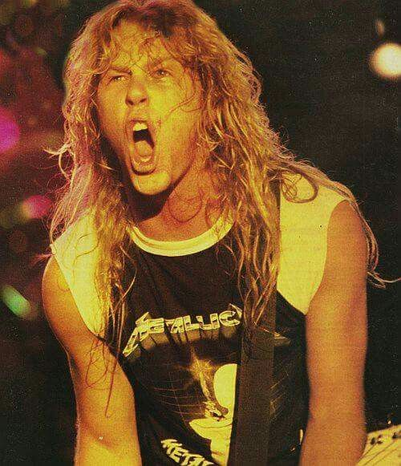
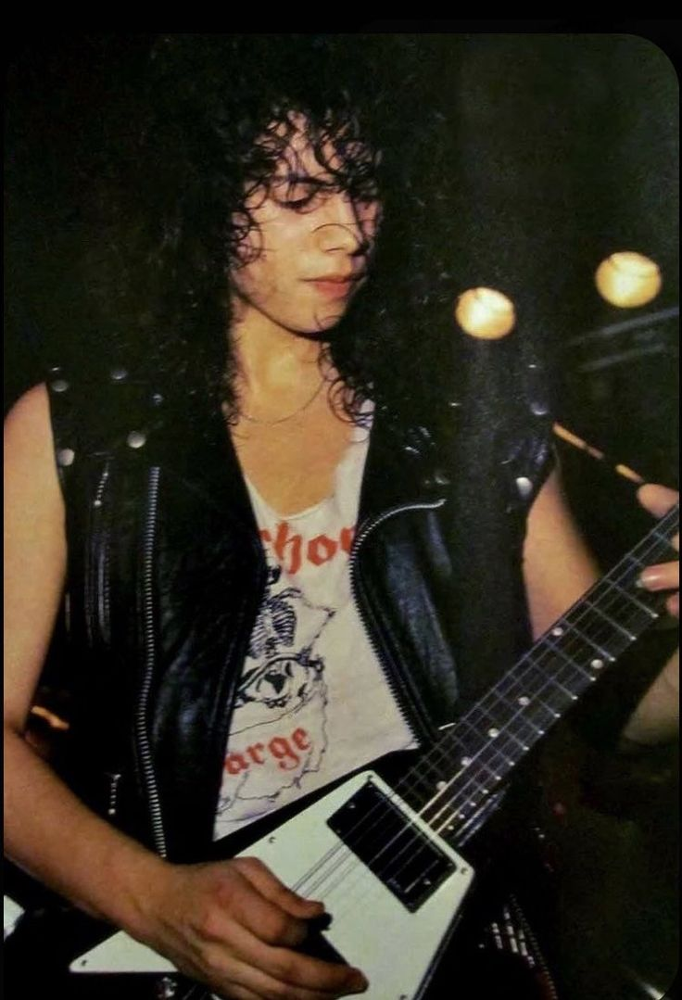
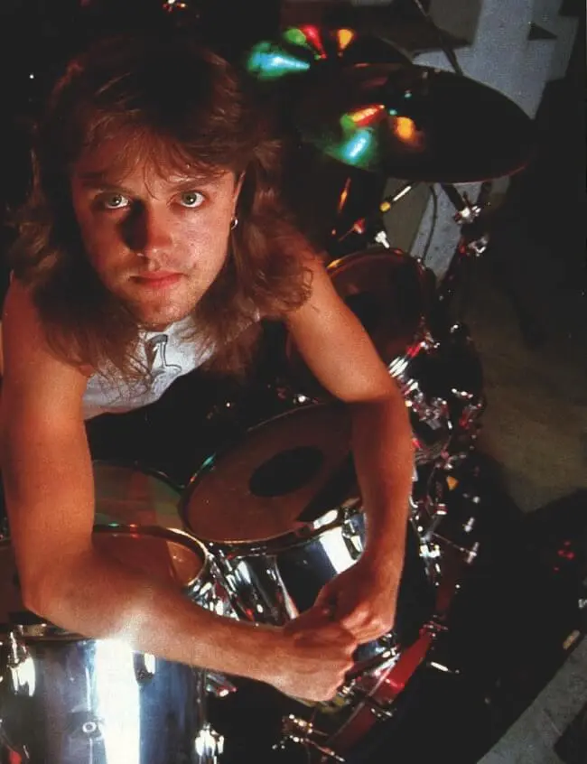

Membros do Metallica
James Hetfield

Atual guitarrista e vocalista, James Hetfield é integrante do Metallica desde sua criação e considerado por muitos como o coração da banda
Kirk Hammett

Guitarrista solo da banda desde a fundação, Kirk é responsável por solos insanos e marcantes de músicas como One e Master Of Puppets
Lars Ulrich

Responsável pela maior parte rítmica da banda, o baterista Lars Ulrich também aparece no Metallica desde sua criação
Robert Trujillo
Presenta na banda desde 2003, o baixista Rob Trujillo toma conta das marcantes linhas de baixo da banda